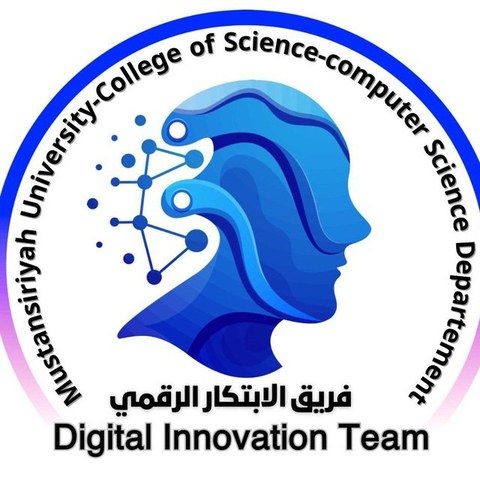

أهلاً وسهلاً بطلبة المرحلة الأولى
في قسم علوم الحاسوب – كلية العلوم – الجامعة المستنصرية. هذا دليلك الأول لبداية رحلتك الجامعية: تعرّف على قسمك وكليتك، ونظام مسار بولونيا، وبريدك الجامعي، والبوابات الإلكترونية المهمة، وعالم الأمن السيبراني.

مرحباً بكم في عائلة علوم الحاسوب
عزيزتي الطالبة، عزيزي الطالب: يسعدنا أن نرحّب بكم في أول خطوة من مسيرتكم الجامعية. السنة الأولى مليئة بالأشياء الجديدة: نظام دراسي جديد، ومنصات إلكترونية، وزملاء وأساتذة جدد. لذلك أعدّ فريق الابتكار الرقمي التطوعي هذا الدليل ليجيب عن أسئلتكم الأولى في مكان واحد.
تصفّحوا الصفحات بالترتيب، وأكملوا قائمة «خطواتك في الأسبوع الأول»، ولا تترددوا في سؤال أساتذتكم وزملائكم في المراحل المتقدمة. نتمنى لكم سنة دراسية موفقة ومليئة بالإبداع.
— فريق الابتكار الرقمي التطوعي، قسم علوم الحاسوب
بإشراف: أ.د. ميثاق طالب كاطع عميد كلية العلوم، وأ. ذكرى حيدر علي عباس رئيسة قسم علوم الحاسوب.
ماذا تجد في هذا الموقع؟
سبع صفحات قصيرة تغطي أهم ما يحتاجه طالب المرحلة الأولى.
قسم علوم الحاسوب
ماذا ستدرس، ومسارك خلال أربع سنوات، وروابط القسم الرسمية.
اقرأ المزيدكلية العلوم والجامعة
تاريخ الجامعة المستنصرية وأقسام كلية العلوم.
اقرأ المزيدمسار بولونيا
الوحدات ECTS، والتقييم، والنجاح، والغياب — بشكل مبسّط.
اقرأ المزيدالأمن السيبراني
ما هو، ولماذا هو مهم، ومجالات العمل فيه.
اقرأ المزيدالبوابات المهمة
البروفايل الأكاديمي، والتعليم الإلكتروني، والمكتبة وغيرها.
اقرأ المزيدالبريد الجامعي
أهميته، وكيف تحصل عليه، وكيف تحميه من الاختراق.
اقرأ المزيدفريق الابتكار الرقمي
من نحن، وأعضاء الفريق الذين أعدّوا هذا الدليل.
اقرأ المزيدموقع القسم الرسمي
الأخبار والتعاميم والبروفايلات الأكاديمية للتدريسيين.
زيارة الموقعخطواتك في الأسبوع الأول
ضع علامة على كل خطوة تنجزها. تُحفظ علاماتك في متصفحك فقط.
أنجزت: 0 من 6
كيف تنجح في سنتك الأولى؟
احضر وتابع أولاً بأول
الغياب محسوب بنسب واضحة في مسار بولونيا، والتقييم المستمر يشكّل 40% من درجة المادة.
برمج كل يوم
البرمجة مهارة تُكتسب بالتمرين. حلّ تمريناً صغيراً يومياً بدل التحضير ليلة الامتحان.
اصنع مجموعة دراسة
ادرس مع زملائك، واسأل طلبة المراحل المتقدمة؛ التعلم الجماعي أسرع وأمتع.
احمِ حساباتك
كلمة مرور قوية لكل حساب، ولا تشارك بيانات دخولك مع أي شخص مهما كان.